Chapter 1 메타분석 개요
메타분석은 동일한 연구 주제로 수행된 다양한 연구로부터 도출된 결과를 계량적으로 분석하는 통합적인 접근 방법(research synthesis)을 의미한다. 일반적으로 동일한 연구 주제로 수행된 연구라할지라도 연구 결과는 연구마다 조금씩 다르기 때문에 어떤 치료(treatment)나 중재(intervention)에 대한 의사결정을 할 때 특정 연구(a single study)의 결과에만 의존하면 잘못된 결정을 내릴 위험이 크다. 따라서, 기존에 제시된 연구 결과를 종합적으로 분석할 수 있는 매커니즘이 필요하며, 이를 위해 메타분석법이 개발되었다.
메타분석의 간단한 역사는 다음과 같다. 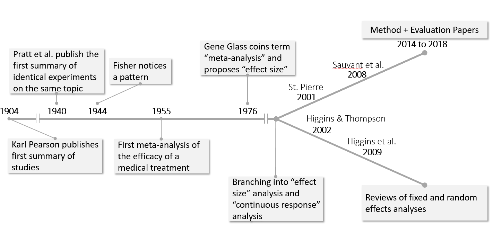
1952년 Hans Eysenck는 정신요법(psychotherapy)이 별다른 효과를 보이지 않는 것으로 결론지어 이에대한 격렬한 논의가 시작되었으며, 이 후 20년간 수백 건의 연구가 진행되었으나 논쟁을 종결시키는 것에는 실패하였다. 이에 1976년 Gene Glass와 그의 동료 Smith는 Eysench의 결론이 잘못되었다는 것을 증명하기 위해 정신요법을 주제로 한 연구 375편을 통계적인 방법으로 통합을 시도하여 정신요법이 효과가 있는 것으로 결론을 내었으며, 이때 사용한 방법을 메타분석(Meta-analysis)라고 명명하였다.
전통적으로 통계적인 방법은 통계적 유의성 검정에 중점을 두지만, 이러한 방법은 여러 결과를 통합하는데 적절하지 않기 때문에 메타분석은 통계적 유의성보다 방향(direction)과 효과의 크기(magnitude of effects)에 중점을 두고 있다. 메타분석의 기본적인 수행 원리는 다음과 같다.
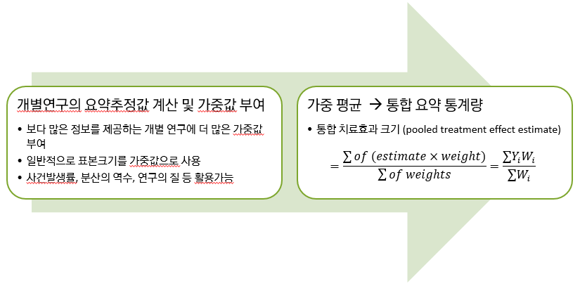
다음의 경우를 생각해보자. 예를 들어 BCG 백신의 효과를 밝히거나, 물리적 거리 또는 마스크가 COVID-19에 효과적인지, 만약 효과가 있다면 어느 정도의 효과를 가지는지 알아보고자 한다면 이와 관련한 연구들을 수집하여 메타분석을 통해 통합적으로 정량적 합성을 할 수 있다. 다음은 스트렙토키나아제(Streptokinase) 메타분석 예제이다. 1959년부터 1988년까지(약 30년간) 심장마비 후 사망을 예방하는 streptokinase의 능력을 평가하기 위해 총 33건의 무작위 시험이 시행되었으며(Introduction to Meta-Analysis, Borenstein et al., 2009), 이를 통합한 메타분석 결과는 다음과 같다.
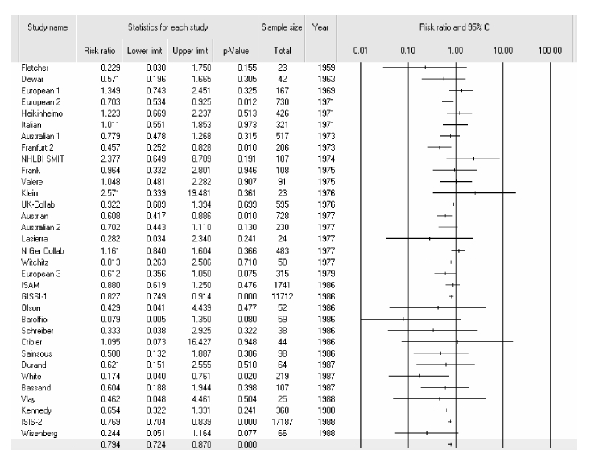
위의 메타분석에 사용된 개별 연구 결과는 모두 유사한 프로토콜에 기반한 임상시험으로부터 도출되었다. 환자군은 무작위로 치료군 또는 위약군에 배정되었으며 동일한 결과 변수를 보고하였다. 결과를 살펴보면 33개의 연구 중 6개의 연구는 통계적으로 유의하고 나머지 27개의 연구는 유의하지 않은 결과를 보이고 있음을 알 수 있다. 즉, 연구 결과가 다양하여 이로 인해 streptokinase의 능력에 대해 명확한 결론을 내리기가 쉽지 않다. 이러한 경우 메타분석을 통해 통합적인 결론을 이끌어 낼 수 있다.
메타분석의 목적은 어떤 치료나 중재에 대한 의사결정을 하기 위해 특정 연구보다는 전체적인 연구 결과의 통합적 분석에 있다. 통합적 분석 방법으로는 체계적 문헌고찰(systematic reviews)과 메타분석(meta-analysis)이 존재한다. 체계적 문헌고찰은 정성/정량적인 분석방법을 기본으로, 때로는 정량적인 부분을 포함하지 않는 경우도 있다. 반면 메타분석은 계량적/정량적인 접근 방법에 주안을 두고 있으며, 때로는 비체계적인 문헌고찰을 수행한 후 메타분석을 하는 경우도 있다. 따라서 일반적으로 체계적 문헌고찰과 메타분석을 동일 또는 하위 개념으로 보기는 쉽지 않다.
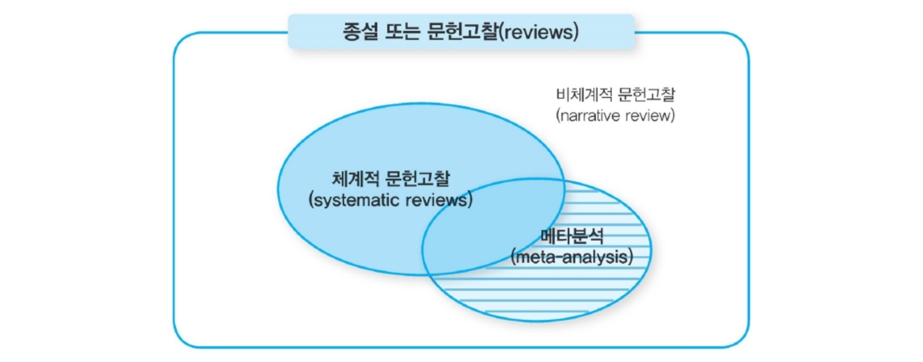
과학적인 근거를 도출하는 방법은 사례보고, 질적연구, 상관관계연구, 실험조사설계 등 매우 다양하지만, 효과 검증을 위한 과학적인 근거에 대한 전통적 위계구조(hierarchy of evidence, level of evidence)에서는 체계적 문헌고찰과 메타분석이 중재 효과를 평가하는 과학적 근거로서 가장 상위에 위치하고 있다. 하지만 최근에는 전통적 위계구조의 최 상단에 위치한 체계적리뷰/메타분석을 따로 분리해서 보거나 혹은 하위에 존재하는 임상 시험 및 코호트 연구를 좀 더 세밀히 살피는 돋보기 역할로 봐야 한다는 주장이 대두되고 있다(Hassan Murad et al., 2016).
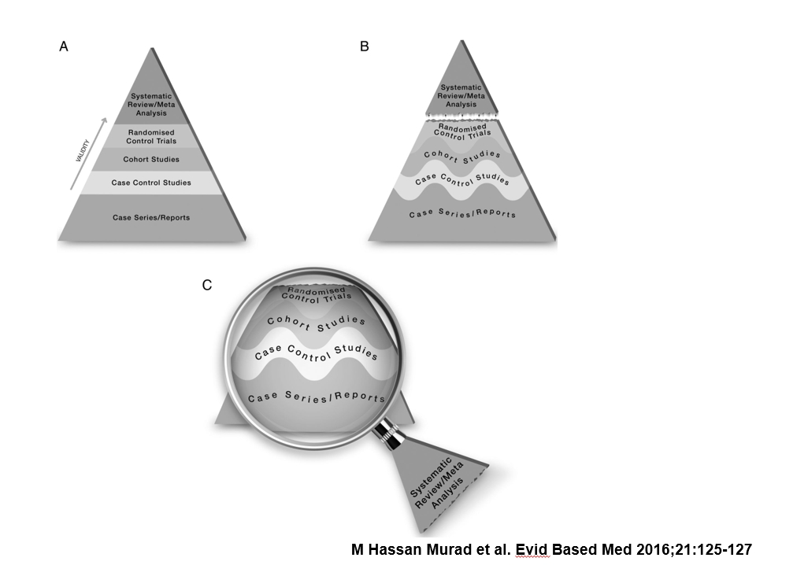
기존의 연구로부터 도출된 결과들을 통계적인 방법을 통해 체계적으로 분석하는 메타분석의 장점은 다음과 같다.
- 연구 결과를 ’합계(summing-up)’하는 과정에 규율을 부과
- 전통적인 문헌고찰과는 차별화되고 좀 더 정교한 방식으로 결과를 보여줌
- 연구 간 차이를 과도하게 해석하지 않도록 보호
- 모수를 더 정확하게 추정
- 결과에 영향을 줄 만한 요인에 대한 분석
- 오류와 왜곡의 최소화
반면, 메타분석의 단점은 다음과 같다.
- 통합가능한 연구 선택 등 많은 노력이 필요
- 기계적인 방법으로 연구간 정성적(qualitative) 차이를 포착하는데 적절하지 않음
- Apple and Orange 문제
- 대부분의 메타분석은 어느정도 흠집이 있는(blemished) 연구가 포함됨
- 지속적인 선택 비뚤림(selection bias) 문제 내포
- 음성이거나 효과없는 연구는 찾기 어려움
- 부정적이거나 유의적이지 않은 결과는 보고되지 않음
1.1 메타분석 과정
메타분석은 일반적인 조사연구의 단계인 1) 연구주제 선정, 2) 문헌의 검색, 3) 데이터 수집, 4) 데이터 분석, 5) 결과보고서 작성의 순서와 비슷하게 진행되며, 구체적인 단계는 다음과 같다.
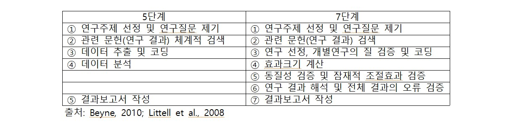
1.1.1 연구주제 선정 및 연구질문
메타분석의 첫 단계는 다른 조사연구와 마찬가지로 연구 질문을 구체적으로 제기하는 것이다. 연구 질문을 어떻게 제기하느냐에 따라 다음 사항들이 결정된다.
- 분석에 포함될 연구(studies to be included)
- 효과크기의 유형(type of effect size analyzed)
- 연구의 특성(study characteristics coded)
- 분석 방법(methods of analysis)
연구 질문이 결정되고 나면 다음 단계는 연구에 포함될 관련 문헌들을 검색하고 이를 찾아내는 것이다. 하지만 문헌 검색에 앞서 연구의 선정 기준(eligibility criteria)을 명확히 해야하며, 연구의 선정기준은 일반적으로 연구대상자(population or participants), 중재방법(intervention), 비교집단(comparison), 연구 결과(outcomes), 연구유형(study designs)을 의미하는 PICOS로 정리할 수 있다.
1.1.2 문헌 검색
PICOS에 따라 연구 선정 기준이 정해지고 나면 관련 문헌, 즉 연구 결과들을 검색하게되며 검색 방법은 관련 학술 데이터베이스(예: Embase, PubMed 등)를 기본으로 하며, 이에 더해 관련 저널에 대한 수작업 검색(hand search), 회색문헌(grey literature)에 대한 검색, 적합도가 높은 연구논문의 참고문헌 검색, 연구자들을 직접 접촉하는 방법 등을 활용하게 된다. 문헌 검색은 체계적 문헌고찰과 함께 메타분석에 있어서 가장 중요한 부분 중 하나로, 충분히 포괄적이고 체계적이어야 한다. 문헌 검색은 다음과 같은 단계로 진행되는 것이 일반적이다.
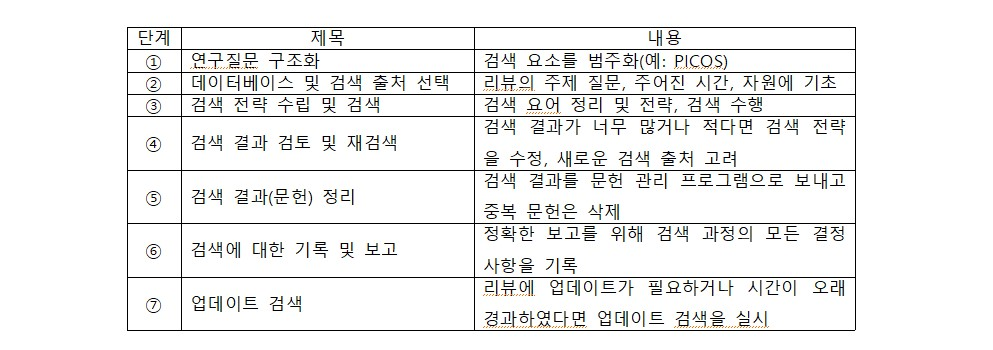
1.1.3 연구 선정, 개별연구의 질 검증 및 코딩
2단계에서 검색된 문헌을 토대로 적절한 데이터를 추출해서 분석을 위한 코딩 작업을 하는 단계가 세 번째 단계이다. 최종 연구의 선정 과정은 일반적으로 다음과 같다.
- 문헌 발견: 데이터베이스 검색 등을 통해 발견한 연구
- 문헌 선별: 중복 연구 제외, 제외한 연구와 그 이유 등
- 선정기준 검토: 전문(full-text) 검토 등을 통한 연구 선정
- 최종 선정
이어서 최종 연구에 선정된 연구들을 대상으로 그 연구의 질을 확인하며, 다음은 메타분석에 포함된 각 개별연구를 코크란(Cochrane)의 Risk of Bias (ROB) 분석 도구를 통해 연구의 질을 분석한 사례이다.
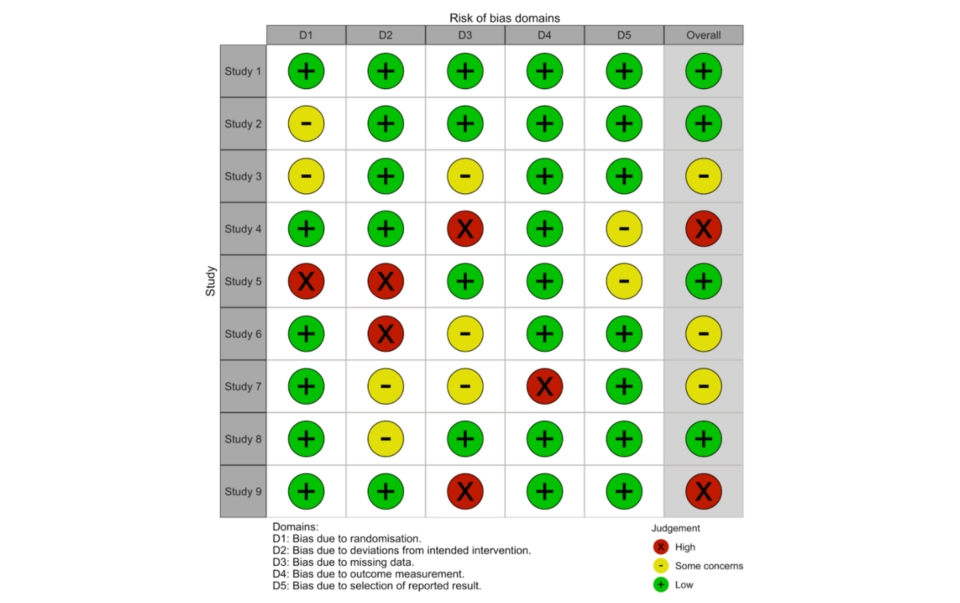
다음 단계는 각 개별연구에서 데이터를 추출하여 코딩을 하며, 이 작업은 데이터 분석 및 통합을 위한 준비단계에 해당된다. 일반적으로 데이터 코딩에는 연구이름, 출간연도, 출간유형, 표본의 특성, 개입의 특성(개입기간, 횟수 등), 연구유형, 집단배정 방법, 측정도구, 효과크기 등에 대한 내용을 코딩한다.
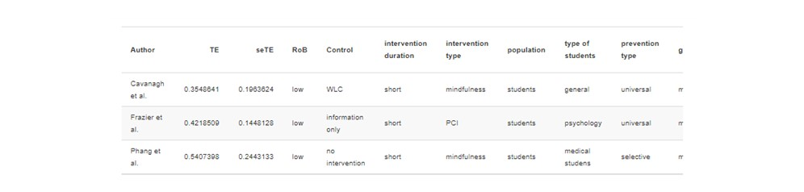
1.1.4 데이터 분석
데이터 분석 단계에서는 각 연구의 효과크기를 우선적으로 계산한 후 그 통계적 유의성을 살펴보고, 평균효과크기와 통계적 유의성을 보게 된다. 그리고 각 효과크기를 잘 표현해주는 forest plot을 기본적으로 제시한다.
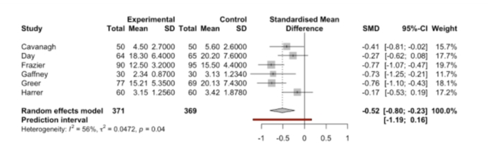
1.1.5 결과 보고
메타분석 결과에 대한 보고는 일반적으로 여타 연구 결과 보고와 비슷하다. 연구 결과는 다음과 같이 구성된다.
- 서론(introduction)
- 연구방법(method)
- 분석결과(results)
- 논의(discussion)
- 참고문헌(references)
- 부록(appendices)
1.2 메타분석 주요 용어
1.2.1 효과크기
효과크기(effect size)는 프로그램(개입)의 효과크기, 또는 변수 간 관계의 크기를 표현한 값을 의미한다. 메타분석에서 분석 단위(unit of currency in a meta analysis)에 해당되며, 일반적으로 효과크기의 유형으로는 표준화된 평균 차이(Cohen’s d, Hedges’g), 두 집단의 비율(risk ratio, odds ratio, risk difference), 두 변수 간의 상관계수(correlation coefficients) 등이 있다. 메타분석은 일반적으로 다음과 같은 순서로 진행된다.
- 개별연구의 효과크기 계산
- 개별연구 간 효과크기의 일관성 검토
- 평균효과크기 산출 및 유의성 검토
1.2.2 통계적 유의성
각 연구의 효과크기는 신뢰구간(confidence interval)으로 경계를 표현하며, 각 연구에서 추정된 효과크기의 통계적 유의성(statistical significance)을 나타낸다. 예를 들어, 효과크기가 군간 차이를 나타낸다면 신뢰구간이 0을 포함하지 않을 때 통계적으로 유의하다. 또한, 신뢰구간은 효과크기의 정밀성(precision)을 나타내기도 하는데, 구간의 길이가 짧을수록 추정된 효과크기가 정밀하다고 볼 수 있다.
1.2.3 가중값
메타분석에서는 개별연구별로 서로 다른 가중값(weight)을 부여하며, 평균효과크기(summary effect size)를 계산할 때 사용한다. 일반적으로 가중값이 큰 연구들은 정밀성(precision)이 높은 연구이며, 가중값이 작은 연구들은 정밀성이 낮은 연구이다. 가중값은 분산의 역수(inverse of the variance)로 계산되며, 표본크기가 클수록(분산이 작을수록) 높은 가중값이 부여된다.
\[ W_i=\frac{1}{V_i}, \,\,\, W: 가중값,\,\,\, V: 분산 \]
1.2.4 평균효과크기
메타분석의 주요 내용 중 한 가지는 평균효과크기 계산이다. 각 개별연구의 효과크기에 가중값을 부여해서 전체 연구의 효과크기, 즉 평균 효과크기를 산출한다. 또한 평균효과크기의 유의성을 판단함으로써 평균효과크기의 의미를 설명할 수 있다. 일반적으로 평균효과크기(mean effect size, summary effect size)는 전체효과크기(overall effect size), 효과의 가중평균(weighted mean effect) 등으로 불린다.
1.2.5 Forest plot
메타분석을 이해하려면 가장 기본적인 분석 결과인 forest plot을 먼저 이해해야 한다. Forest plot에는 각 개별연구의 효과크기, 통계적 유의성(정밀성), 가중값이 제시된다. 아울러 개별연구들을 종합한 평균 효과크기와 그 통계적 유의성도 제시된다.
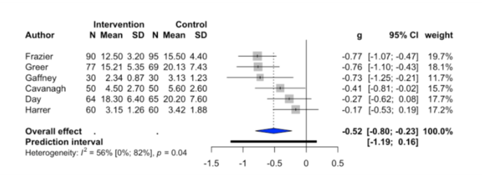
Forest plot에서 정사각형(square)은 개별연구의 효과크기를 나타내고, 구체적으로 정사각형의 크기는 가중값, 정사각형의 위치는 효과크기의 방향(+ 또는 -)을 나타낸다. 정사각형의 가운데 위치는 크기(magnitude of the effect)를 표현한다. 다이아몬드(diamond)는 전체효과크기, 즉 평균효과크기(mean effect size 또는 summary effect size)를 나타낸다.
1.3 일반적인 메타분석 접근법
- 자료종류에 따른 요약 통계량 선정 및 유형 검토
- 연속형 자료, 이분형 자료, 생존 자료 등
- 요약 통계량 결합을 위한 메타분석의 통계적 모형 선정
고정효과모형(fixed effect model), 랜덤효과모형(random effect model)
빈도주의모형(freqentest model), 베이지안모형(Bayesian model)
- 이질성 검토 및 메타분석: 시각적 검토 및 통계적 검정
이질성(heterogeneity) 문제가 없을 때 메타분석 시행
이질성이 확인될 경우 원인 파악
- Subgroup analysis, meta-regression
이질성 원인을 설명하지 못한 경우 질적으로 기술(qualitative analysis)
- 출판 비뚤림(publication bias) 및 민감도 분석(sensitivity analysis)
- 연구특성에 따른 분석이나 이상값을 포함 또는 배제시킨 후 분석 등